9M6JU 2002
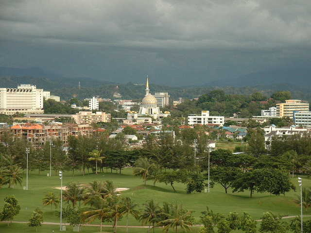
Kota kinabalu Malaysia
18.Nov-25.Nov.2002
|
◎ 9M6JU November.2002
2002年11月18日から25日までの8日間の日程で、東マレーシア(East Malaysia)のコタ・キナバル(Kota kinabalu)から9M6JUを運用した。
9M6(Sabah州)の訪問は、3月-4月のケニンガウ(Keningau)から9M6AACと9M6JUを運用して以来で今年2度目。 |
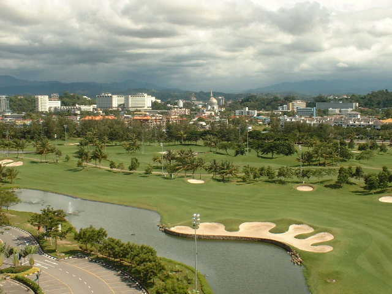

Sutera Harbour Hotelの11階から眺めるKota Kinabalu市街／中近東・ヨーロッパ方面(右)
11月が雨季のEast Malaysiaは午前中から日中は快晴、夕方から豪雨と雷の毎日だった
|
ホテル側と事前に交渉してくれた9M6GY・Godfreyは、今回も同じ部屋を予約してくれていたが、現地でいざアンテナを設置してみると、
一段低い9階の屋上からは、肝心の北米・JA方向の北東側が13階建ての本棟の壁でブロックされていて、6mの運用には適していない事が判った。 翌日になって周囲が360度見渡せる13階の本棟の屋上を使わせてもらう様に交渉、同軸ケーブルの引き込みも考慮して部屋も11階に移動することに決まった。 本来、Sutera Harbour Hotelの様な高級ホテルでは屋上を使わせてくれる事は難しいものなのだが、 昨年の"SEANETの実績"が功を奏し、ホテル側の対応もこちらが恐縮してしまうほど協力的だった。 |
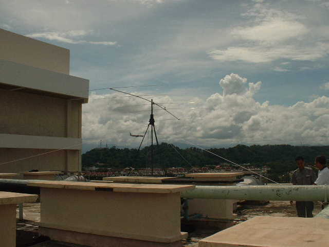
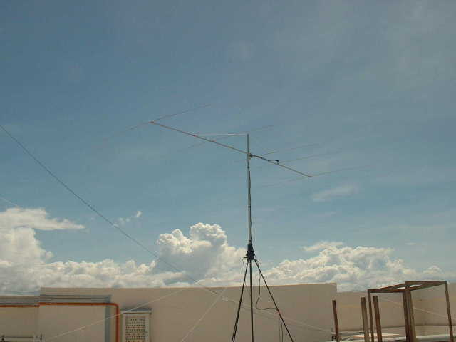
最初に建てた9階の6m-ANT。北米側は壁でブロックされた／翌日13階屋上に上げ直した6m-ANT

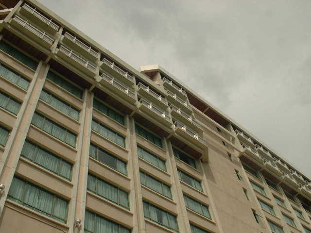
Hotelの全景。手前の低い所が9階／中央部4段のベランダ上から2段目が11階のシャック
|
◎ 9M6JUの6m運用
今シーズンはVKや赤道に近い南アジアの9M2、VUなどからヨーロッパがオープンしており、
9M6からのQSOも大いに期待して出かけたのだが、11月中旬からコンデションは急降下、
残念ながら"サイクル23"の落ち込みをずっしりと肌で感じる結果となった。
滞在期間中、期待した本命の北米はおろか、ヨーロッパの信号も聞くことは出来なかった。 |
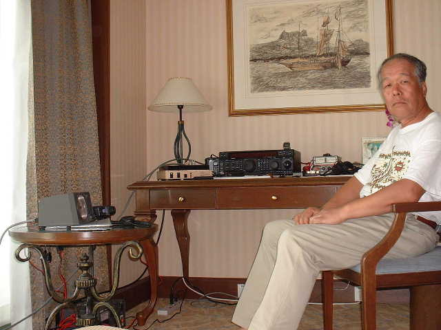
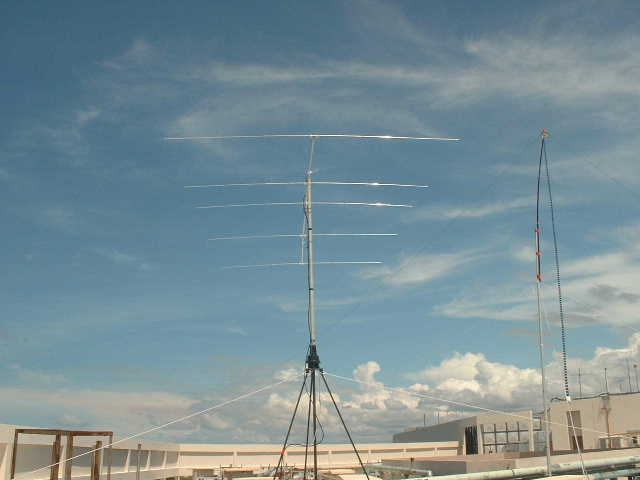
9M6JUを運用するJA1RJU／Hotelの13階屋上に建てられた6m用5el & G5RV HF-ANT
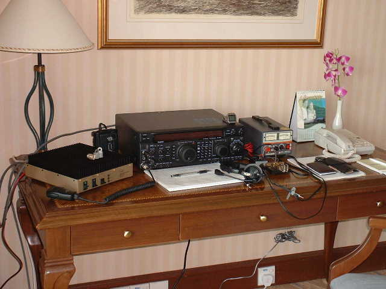
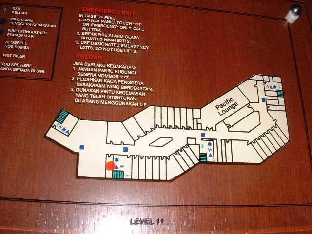
(左)RigはFT-920+AMP(350W)、FT-100
見取り図の赤丸が無線室となった11階の部屋。他の部屋とは離れていて静か
建物の中央部は一階まで吹き抜けになっている。12階はスイートルームの特別室
Kota Kinabaluの近況
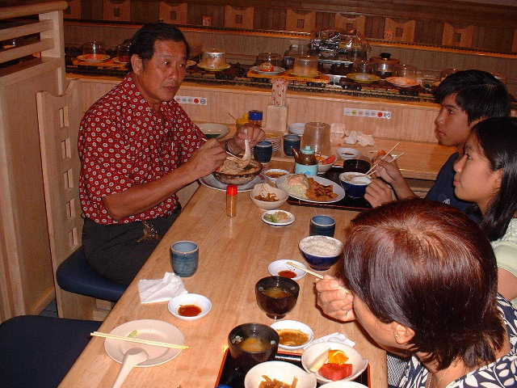
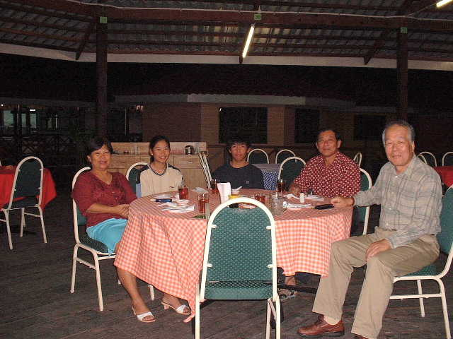
"サンタフェ"の機関車に引かれて回る、Kota Kinabaluの回転寿司。連日賑わっている。(左)
お世話になった9M6GYの家族と。左から9M6JY、娘さんと息子さん、9M6GY、JA1RJU(9M6JU)